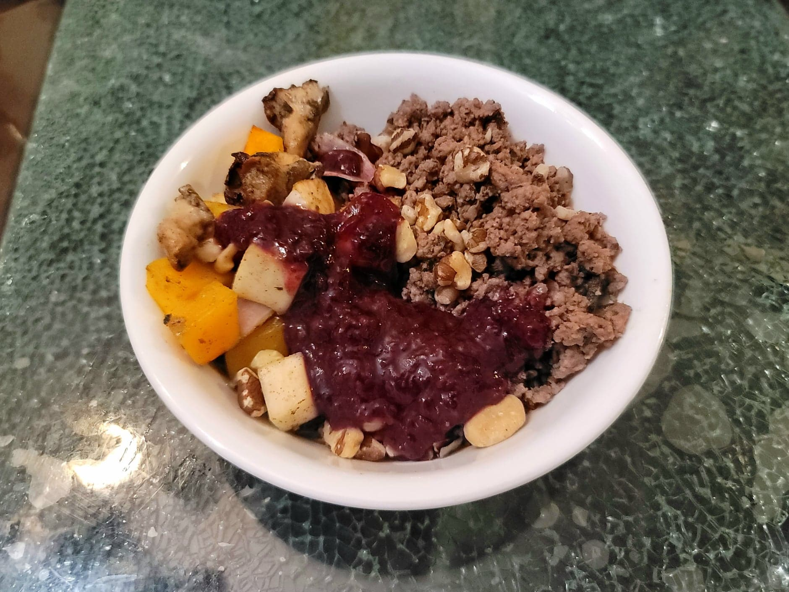

Autumn Harvest Bison Bowl

Ingredients:
- 1 Butternut squash or Acorn squash, peeled and 1/2" cubed
- 2 Wild onions, quartered
- 1/2 lb Turnip, 1/2" cubed
- 1 Sweet potato, 1/2" cubed
- 2 tbsp Sunflower oil
- 2 tsp Sage
- 1/8 tsp Salt
- 1 cup Wild mushrooms or Oyster mushrooms, 1/4~ lb
- 2 tbsp Maple syrup
- 2 tbsp Maple vinegar or Apple cider vinegar
- 1 tsp Whole grain mustard
Wojapi:
Ground Bison:
- 1 lb Ground bison
- 2 tbsp Sunflower oil
- 1 tsp Dried sage
- 2 tsp Dried wild bergamot
- 1/8 tsp Smoked salt
To Serve:
- 2 cups Wild rice, cooked
- Optional: Black walnuts, chopped
- Optional: Chia microgreens, chopped
Instructions:
- Preheat an oven to 425 degrees Fahrenheit.
- For the roasted vegetables, first combine the squash, turnip, onion, and sweet potato into a very large bowl. Add the oil, sage, and salt and toss to combine. Place onto baking sheets and bake for about 30 minutes, shaking occasionally.
- Whisk together the maple syrup, vinegar, and mustard. After the 30 minutes, add the mushrooms to the baking sheets and brush everything with the syrup vinegar mixture. Place bake into the oven to bake for another 7-10 minutes.
- For the ground bison, heat the oil in a pan over medium heat. Add the ground bison and the seasonings. Sauté until completely cooked and then taste and add more salt if needed.
- To serve, place the wild rice in a bowl and top with the ground bison, roasted vegetables. Optionally top with black walnuts and chia microgreens.